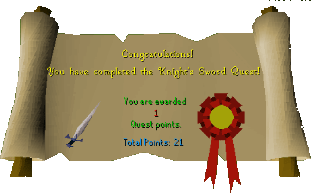

The Knight's Sword
Description: Sir Vyvin's squire is in trouble. He has accidentally lost Sir Vyvin's ceremonial sword. Help him find a replacement without Sir Vyvin finding out.Difficulty: Intermediate
Length: Long
Items & Skills Needed:
- 10 Mining
- The ability to run past level 57 ice warriors and level 53 ice giants
Recommended:
Reward: 1 Quest point, 12,725 Smithing XP, Blurite sword (if you got Thurgo to make you an extra one)
Instructions:
Talk to the squire about his mishap. He'll direct you to Reldo at the Varrock Castle Library.
Reldo will give you the location of the last Incamdo Dwarf in RuneScape. (If you accidentally say you need a quest, you will start the Shield of Arrav quest. Until you find the book on one of the bookshelves, you won't be able to ask about the quest you actually want to work on.)
Head southwest of Port Sarim to the cliff below which Thurgo lives. Give him your pie, and he'll get talkative. He needs a picture, so head back to the Falador castle.
Speak to the squire in the courtyard, then go up to the east side of the 3rd floor. Search the cupboard in his bedroom while Sir Vyvin is not in the room.
Go back to Thurgo. Bring the iron bars, armor, etc., if you want to save yourself a trip back to the bank later. Talk to Thurgo and he'll say you need blurite ore.
Go into the cave above his house. Head deep into the cave until you reach the ice room. Run past the Ice Warriors and Ice Giants to the back wall, mine one blurite ore or two if you want your own sword. When you have the amount of blurite you want, run out.
Go back to Thurgo with your blurite ores and your iron bars. He will make you a sword. If you want a sword for yourself, drop it and ask Thurgo for a replacement. Pick up the second sword again.
Take it back to the squire for your reward. I had trouble parting with my sword because it looked so cool... lol.
Congratulations, Quest Complete!

This quest guide was written on RuneHQ by Gnat88. Thanks to Urger, noob hunters, Weezy, IglooGuy, and stormer for corrections.
This quest guide was entered into the database on Sat, Feb 28, 2004, at 06:03:08 PM by Monkeychris and was last updated on Tue, Apr 20, 2004, at 11:17:05 PM.